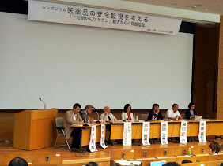

Symposium " Consideration of Pharmacovigilance --Lessons from the adverse effect of HPV vaccination"
2014-07-27

Medwatcher Japan Symposium
Consideration of Pharmacovigilance
--Lessons from the adverse effect of HPV vaccination
(Guest speaker: Andrew Herxheimer)
Time: 1:30 - 5:00 P.M, Sunday July 27th, 2014
Venue: Tetsumon Hall of Tokyo University
http://www.orltokyo.jp/img/hananohi/map2013.pdf
Medwathcer Japan will hold a symposium to consider the actualities and issues of pharmacovigilance in Japan through the scourge of HPV (cervical cancer) vaccine injuries. Invited speakers are a UK’s clinical pharmacologist and legend of European medical community, Dr. Andrew Herxheimer, and Prof. Kusuki Nishioka, Director of Institute of Medical Science, Tokyo Medical University.
Dr. Herxheimer who had worked devotedly to save SMON victims in Japan has been influencing on many people through his career as editor of medical journals, Cochrane Centre, and activities of patients’ narratives database, DIPEx. He is now 88 years old and still actively visits countries around the world where he is invited to give lectures. Prof. Nishioka had quickly formed a research team on HPV vaccine (cervical cancer vaccine) injuries.
At the Session 3, designated remarks from the National Cervical Cancer Vaccine Victims Network and discussion with the audience are planned.
Program:
Session 1 Keynote Lecture
"Pharmacovigilance Still Neglects Patients"
Andrew Herxheimer
Session2 Special Lecture
"What We Found in HPV Vaccination Scandal"
- The Problem with Doctor’s Moral and Education-
Kusuki Nishioka
Session3 Panel Discussion
Pharmacovigilance for whom it works?
--Multimodal approach for the rescue of HPV vaccine victims―
"The Research on Actual Situation of Victims"
Makiko Goto
"Conflict of Interest"
Masato Sekiguchi
"The Proposal of the MHLW Advisory Committee on Administrative Reform Based on Drug-Induced Hepatitis-C Scandal"
Masumi Minaguchi
"The Reports from HPV Vaccination Victims Group"
Mika Matsufuji, Toshie Ikeda
Coordinator Hirokuni Beppu / Toshihiro Suzuki
Fee: free, no reservation needed
Simultaneous translation in Japanese and English
This event is hosted by Medwatcher Japan, co-hosted by The Informed Prescriber,
supported by Japanese Society for Pharmacoepidemiology Tusk Force, DIPEx-Japan
- Related Documents And URL